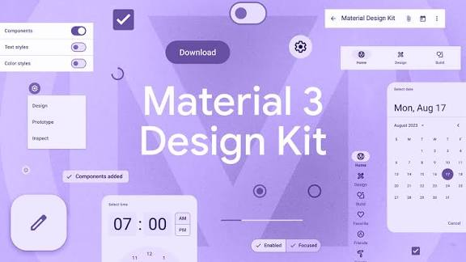
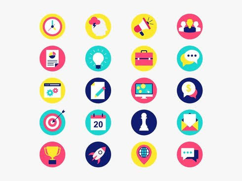
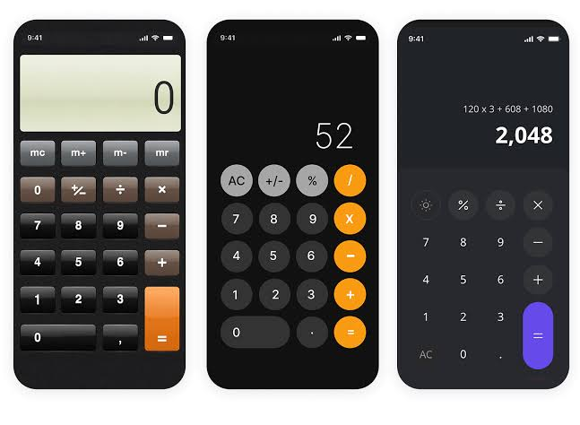
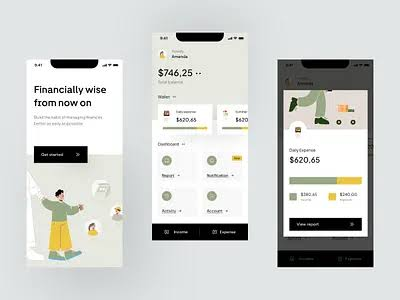
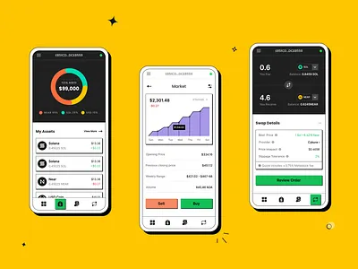

🎨Diseño de Interfaces de Usuario (UI)
El diseño de interfaces de usuario (UI) es la práctica de crear interfaces digitales que permitan a las personas interactuar con productos y servicios de forma eficiente, clara y placentera. Está estrechamente ligado a la experiencia de usuario (UX), que engloba investigación, arquitectura de información y usabilidad.
Reglas y principios fundamentales
- Claridad: la interfaz debe comunicar su propósito y acciones posibles sin ambigüedad.
- Consistencia: mantener patrones visuales y comportamientos repetibles en toda la aplicación.
- Jerarquía visual: organizar la información para guiar la atención (tamaño, contraste, posición).
- Retroalimentación: el sistema debe informar al usuario sobre lo que sucede (cargas, errores, confirmaciones).
- Minimizar carga cognitiva: no pedir más información ni pasos de los necesarios; mostrar solo lo esencial.
- Accesibilidad: garantizar que personas con diferentes capacidades puedan usar la interfaz (contraste, tamaño de objetivo, navegación por teclado/voz).
- Control y libertad: permitir deshacer/rehacer acciones y evitar bloqueos inesperados.
- Feedback progresivo: dividir tareas complejas en pasos y mostrar progreso.
- Diseño centrado en el usuario: validar decisiones con usuarios reales mediante pruebas y métricas.
Diferentes tipos de estilo (estéticas) y en qué consisten
1. Material Design
Diseñado por Google, se basa en metáforas de papel y tinta (profundidad, sombras) y en sistemas de componentes y motion. Enfatiza la consistencia, rejillas y jerarquía.
2. Flat Design (diseño plano)
Elimina efectos tridimensionales (sombras, gradientes) y usa formas simples, colores planos y tipografía clara. Busca simplicidad y velocidad de comprensión.
3. Neumorphism
Estilo que combina características de skeuomorphism y flat: usa sombras suaves para crear elementos que parecen salir o hundirse en la superficie. Es estético pero puede tener problemas de accesibilidad si no se cuida el contraste.

4. Skeuomorphism
Imita objetos del mundo real (texturas, sombras realistas) para que la interfaz sea familiar. Fue muy popular en los inicios de los smartphones; hoy se usa con moderación.
5. Minimalismo
Reduce elementos a lo esencial, mucho espacio en blanco y tipografía prominente. Favorece la rapidez de comprensión y elegancia, pero puede dejar fuera señales necesarias si se exagera.
6. Brutalism
Estética intencionalmente áspera y sin pulir: tipografías grandes, colores contrastantes y disposición poco convencional. Se usa a veces para destacar o marcas disruptivas.
Elementos de una interfaz
- Navegación: menús, barras de navegación, pestañas, drawers; deben ser predecibles y accesibles.
- Controles de interacción: botones, interruptores, checkboxes, radios, selectores.
- Formularios: campos de texto, máscaras, validación en tiempo real y ayuda contextual.
- Tipografía: jerarquía de títulos, subtítulos y cuerpo; legibilidad en distintos tamaños y pantallas.
- Iconografía: iconos claros y consistentes, preferiblemente con etiqueta cuando su significado no sea obvio.
- Colores y contraste: paleta coherente, semántica (errores, éxito) y suficiente contraste para accesibilidad.
- Imágenes y multimedia: fotografías, ilustraciones y video que soporten el contenido sin distraer.
- Feedback visual: estados (hover, activo, deshabilitado), loaders y microinteracciones.
- Layouts y grids: sistemas de rejilla responsiva para adaptar la UI a distintos tamaños y orientaciones.
Reglas prácticas de usabilidad (heurísticas)
- Visibilidad del estado del sistema.
- Compatibilidad entre el sistema y el mundo real (lenguaje familiar).
- Control y libertad del usuario.
- Consistencia y estándares.
- Prevención de errores y recuperación sencilla.
- Reconocer antes que recordar (mostrar opciones visibles).
- Flexibilidad y eficiencia de uso (atajos para usuarios expertos).
- Estética y diseño minimalista.
- Ayuda y documentación accesible.
Ejemplos de apps con buenas interfaces de usuario y por qué
1. Spotify
Por qué es buena: interfaz clara y consistente que prioriza contenido (carátulas, listas). Navegación simple entre biblioteca, buscador y reproductor. Microinteracciones y feedback rápido al reproducir pistas. Buen uso de jerarquía visual y tipografía para guiar al usuario.
2. Airbnb
Por qué es buena: foco en imágenes grandes y ficha de información clara para la toma de decisiones. Formularios de reserva simplificados, navegación coherente y buen manejo de filtros. La experiencia de búsqueda y reserva está optimizada para reducir fricción.
3. Google Maps
Por qué es buena: gestiona gran cantidad de información sin abrumar: mapas interactivos, rutas, capas y fichas contextualizadas. Feedback inmediato (tránsito en tiempo real, tiempos estimados) y controles accesibles. Uso eficiente del espacio en pantalla y priorización según contexto (conducir, caminar, transporte público).
4. Duolingo
Por qué es buena: gamificación y diseño limpio para mantener la motivación. Lecciones cortas y retroalimentación inmediata, iconografía y colores que comunican progreso. El equilibrio entre diversión y claridad hace que la UI sea efectiva para aprendizaje.
5. Apple Music
Por qué es buena: consistencia con el ecosistema Apple, tipografía y espaciado que favorecen legibilidad. Navegación por pestañas clara y reproductor con controles grandes y accesibles. Integración con hardware (AirPlay, CarPlay) y animaciones sutiles que mejoran la experiencia.
Buenas prácticas de diseño para móviles
- Priorizar contenido y acciones principales en la zona de alcance del pulgar.
- Usar grids responsivos y componentes reutilizables.
- Probar con usuarios reales y medir: tasas de conversión, tiempo de tarea, errores.
- Considerar rendimiento y tiempos de carga: una UI rápida mejora la percepción del producto.
- Diseñar pensando en accesibilidad desde el inicio: etiquetas, roles ARIA, contraste y tamaños táctiles.